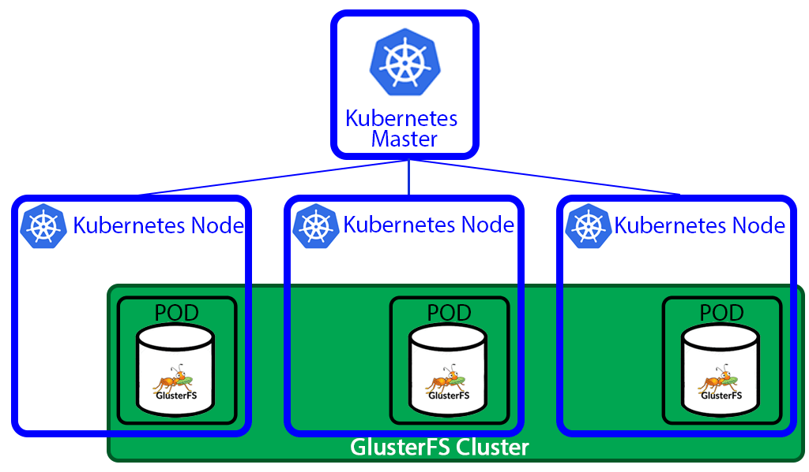
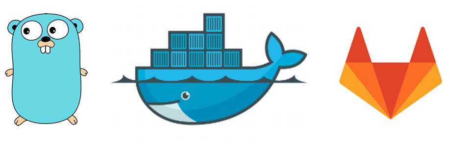

Docker

Creating a high available PostgreSQL cluster always was a tricky task. Doing it in the cloud environment is especially difficult. I found at least 3 projects trying to provide HA PostgreSQL solutions for Kubernetes.
Patroni
Patroni is a template for you to create your own customized, high-availability solution using Python and - for maximum accessibility - a distributed configuration store like ZooKeeper, etcd or Consul. Database engineers, DBAs, DevOps engineers, and SREs who are looking to quickly deploy HA PostgreSQL in the datacenter - or anywhere else - will hopefully find it useful.

After my previous post - How to easily deploy GitLab to Kubernetes - I’ve got a lot of responses. I helped several people to get GitLab up and running on their clusters. With that manifests it became much easier to deploy GitLab to Kubernetes. It was still few things that were usually misunderstood and misconfigured. You can find out these things only by talking with people who are actually trying to use your work.

I spent last two days installing GlusterFS storage on top of my Kubernetes. It took much more time and effort than it should. I faced all kinds of problems, some if which were not obvious and took a lot of googling. So I decided to write this post. Hopefully it will save some time for somebody.
I was playing with helm. Trying to assemble a complex application with several dependencies from official chart repository.

This post will show how to build Golang docker containers using Gitlab-CI. It’s the sequel of my previous posts about building and optimizing docker containers.
I’ve written a small microservice in Golang, and I needed to configure my GitLab to auto build it. It uses Glide as a package manager for Go.
My directory tree for this project looks like this:
> $ tree ├── Dockerfile ├── build_base.sh ├── glide.
Serverless or Function as a Service What is Serverless/FaaS? Serverless is a new paradigm in computing that enables simplicity, efficiency and scalability for both developers and operators.
For a long time, there was only one FaaS implementation available for Kubernetes - Funktion. Which I found a bit complicated and tightly coupled with the fabric8 platform. They claim to support functions in any language, but I found only java and nodejs examples in the repo.